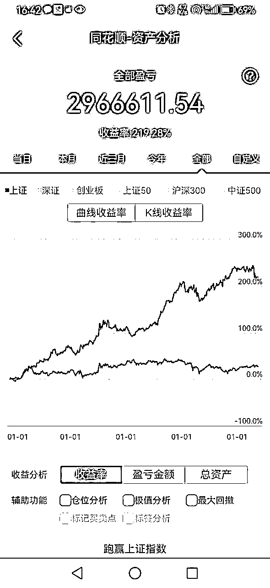
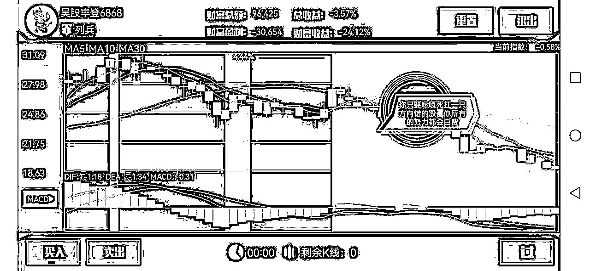

来源：https://wiizueiq5ks.feishu.cn/docx/IYA2dTaXooUdR9xPjdVcGoCVnfc
当我说不要炒股的时候，会有人说，你是亏多了才跟我们说不要炒吧。不，相反，我不是亏怕了，跟大家说不要炒股。反而，我有赚到钱。赚钱了才跟你说不要炒股。因为我看过太多炒股亏钱的。包括券商公司的各个老总。别看他们是从业人员，他们有时候也是妥妥的韭菜。你们看下面的时间图，就是在同一时间一个手机上截图出来的。

圣经新约《马太福音》中有这样一个故事，一个国王远行前，交给三个仆人每人一锭银子，吩咐他们:“你们去做生意，等我回来时，再来见我。”
国王回来时，第一个仆人说:“主人，你交给我的一锭银子，我已赚了10锭。”于是国王奖励了他10座城邑。
第二个仆人报告说:“主人，你给我的一锭银子，我已赚了5锭。于是国王便奖励了他5座城邑。
第三个仆人报告说:“主人，你给我的一锭银子，我一直包在手巾里存着，我怕丢失，一直没有拿出来。”
于是国王命令将第三个仆人的那锭银子赏给第一个仆人，并目说:“凡是少的就连他所有的，也要夺过来。凡是多的，还要给他，叫他多多益善。”这就是马太效应，它反映了当今社会中存在的一个普遍现象，即“赢家通吃”
马太效应在股市尤为明显:会赚钱的上市公司更加会赚钱;会赚钱的股民也更加会赚钱。
但散户的思维逻辑就是：我不看盘，我听人说，我看文章，我听利好，我跟着财经大博主，但是坚决不自己认真看盘，也跟着预测大盘几乎没有说对过的网虫炒，或者跟着股评家瞎炒，或者自己买了套了就放着，秉承着我不卖就是没亏的逻辑。
我给大家看看几张股图。解释一下赢家还是赢家，输家就是是输家。
贵州茅台：股价一直都是很稳定的往上走，即使下跌，也会慢慢的回来。他的护城河在于他们的每年的利润。茅台不怕卖不出去，就是产能跟不上去。所以股价的跌幅有限，又能享受分红。属于中国股票里强者恒强的。是有现金流壁垒的。
苹果公司：巴菲特在低位的时候没进去，到高位了才进的苹果公司，为什么？因为苹果成了全球的头部企业，他们的公司的每年的利润分红，着实丰厚。这就是巴菲特选择他的原因，因为这家公司已经从科技公司转变成一家以日常消费为主的公司，虽然科技还是有，但他的主营收入就是给客户提供电脑和手机。
*ST中天，原称：中天金融，为什么说这只，因为这只我也吃过亏。我一个很要好的朋友吧，他说内部消息，要跟华夏人寿进行资产重组，结果到看了一下，还真有这个公告，前期购买的时候K线组合我觉得可能有一点机会，想着如果这只万一真有重组空间，就爆了。所以结果我就随手买了几万块钱扔着，止损线20%。
然后我看着，后面怎么没动静了。然后亏到20%，亏了2万块钱吧。我就撤了。我朋友因为听信他的舍友（他舍友一千多万买这只，也死扛着），两个人互相脑补，我朋友用银行贷款加融资融券杠杆买了这只，300万的资金上车，扛了两年，到今天为止，要退市了。300万啊，多少人一辈子都赚不到的现金，这只就让他现在已经负债累累。多次劝他，别扛了，止损线到了，就不是你的名，他就是十头牛都拉不回来，一直死扛着。现在我经常给他打电话，安慰他人生路很长，一定不要想不开。唉~人生啊，一次的决策失误就可能让人万劫不复、
仁东控股：庄股。我就有认识的一个资金中介大佬，因为贪几个配资的利息，被骗到这只股票里面接盘，还有大量的散户被股评家，骗到这只股票，然后就是一泻千里，连续十几个跌停板。说这只的原因就是，所谓的名嘴和股评家、还有消息票，就是用来骗你钱的。股价到现在都起不来。
在股市里，赚钱讲究的是概率论。炒股的人或者身边有人炒股的，都有一个理论是7亏2平1赚，也就是10个人，7个人亏钱，2个人平手，1个人赚钱。其实这两年内，我个人觉得如果这个比喻都很夸张了，应该是80%亏钱，15%的平手，5%的人赚钱，而且这还是市场行情好的时候，如果市场行情不好，可以说更是惨不忍睹。
然后，你觉得你是天选之子、永远运气爆棚、资金体量够大足够补仓？如果没有，你能确定你是这5%-10%的那个人？
有人说市场行情好牛市可以赚，但我告诉你一个真相：大部分散户亏钱是在牛市亏的。大部分人是错过行情，涨到头了，自己才来了点感觉，上了就是接盘侠，而且接的都是大金额。
所以明明知道对你来说大概率亏钱的事情，你还干嘛去玩呢？大概率亏钱的事情，一定要去做，不是傻逼是啥？
扁鹊见蔡桓公，立有间，扁鹊曰:“君有疾在胰理，不治将恐深。”桓侯曰:“寡人无疾。”扁鹊出柜侯日:“医之好治不病以为功!居十日，扁鹊复见，曰:“君之病在肌肤，不治将益深。”桓侯不应。扁鹊出，桓侯又不悦居十日，扁鹊复见，曰:“君之病在肠胃，不治将益深。"桓侯又不应。扁鹊出，桓侯又不悦居十日，扁鹊望桓侯而还走。桓侯故使人问之，扁鹊日:“疾在胰理，汤慰之所及也，在肌肤，针石之所及也;在肠胃，火齐之所及也;在骨髓，司命之所属，无奈何也。今在骨髓，臣是以无请也.
居五日，桓侯体痛，使人索扁鹊，已逃秦矣。桓侯遂死。
解释：此文讲述了蔡桓公讳疾忌医，最后病入骨髓、体痛致死的寓言故事。
同理：股市你踏进去了，这个公司病入膏肓，你还一直补仓补仓，等到最后的时候，哗啦，你破产了。
实话讲，我并不能帮你赚钱，但如果有些人如果能听我的劝诫，不炒股、少炒股、不加杠杆炒股，指不定冥冥之中我就积德了。因为在股市里，这个赚钱就是概率的问题。你长期留在这个股市，老想着翻本，不听旁边人的劝告。
我理解的是人性的贪婪赌博心态
普通人：没内幕信息，没调研信息，没技术
机构，基金（包含专家、大师）：强大后盾，很多调研员，专业分析报告
但机构和基金不会亏钱吗？大家有兴趣可以去翻一翻支付宝的基金，看看他们的历史业绩，跟大盘对比，能强多少，真正厉害的能有几家，凤毛麟角，亏得从2021年顶部跌下来的基金有多凄凄惨惨。你们说我赚钱，我在亏钱的时候也觉得自己是个傻逼。这不，对比起来我做股票，基金经理也不行。所以不存在绝对的方法和技巧。
请看下图，光说赚，不说亏是不行的。我这个主账户的一个短线模型成功率也就55开，而且是花了大量时间研究市场和模型做的超短线。盈利能力肯定比一般的散户强。所以请看，股票还好做么？真心不好做。我的成功几率也就50%。更何况散户。
几乎绝大多数的人进入股市时，根本不知道股市是什么，然后就不断投入。亏了就死扛，有钱就补仓，最后有些人输红了眼，砸锅卖铁全部投进来了。
预设一个虚拟的目标，一个想像中的目标，比如我翻倍就走，完全无视股市本身的规律。我心里上要赚钱买房子，买车子，装修。投入股市之后，就想着很快把买房装修的钱赚回来，把买车的钱赚回来。可悲呀，你以为股市是慈善场所。越想要赚到，越亏。
有人亏钱了，然后就想，等反弹到x x价位一定出来，以后不玩了。这种想法其实也是赌徒心理。
每天都在想：万一走错了怎么办？万一走了还涨，不就亏了？这类人茫然无措，不懂取舍
看到机会到来，犹豫害怕。等到市场真正起来了，又后悔没有及时进场，然后在多次犹豫之后终于下决心追了进去。5元不敢买的，过段时间涨到50元都敢买，结果又被杀跌套牢。
听消息，找捷径，以为这世界上总有一个馅饼能砸着自己。就算偶尔能吃到点“馅饼”，但是抱着这种侥幸心理能一直在股市中生存吗
心态在股市操作中起着至关重要的作用，不容忽视。有些人由于性格原因，在关键时刻难以承受压力。例如，明知道不应该购买，但仍然忍不住手痒，就像有瘾一样，无法控制。从某种程度上说，操作经验并不一定能培养出良好的心态，最好的方法是退出。以下是几种不适合参与股市交易的人：
这种人一旦听到任何消息，就会立即在不经过思考的情况下采取行动。往往听他人买的股票更多，亏得更多。
这类人可能只有几万元的资金，却能持有十几甚至几十只股票，想要拥有所有股票。不管哪只股票上涨，都会说自己也持有这只股票，用以安慰自己。
明知道操作有误，却无法控制自己，总是有一种执念。在关键抉择时刻，总是出错。
对于某只股票，割了又追，追了又割，完全被一股无名的引力牵引，死怼着原来亏的那只股，就往那鬼窟里去了。这种所谓杀红了眼的人，最后的结局就是被股市消灭。有些人是典型的不改错误，犯同样的错误却始终不改。在股市中，一个错误就可能致命。
这类人把股市当作赌场，妄想一夜暴富，从银行借钱，融资融券加杠杆，追热点，打涨停，不考虑自身的风险承受能力。
这种人就爱认死理，一万头牛拉不回。比如我一定要这只股票回本我才肯卖，一直补仓。一直补仓。这种偏执，对搞理论或其他研究工作可能影响不大，甚至有益。但是在万变的股市中，偏执狂是没有活路的。
我亲戚的同学，清华大学博士生经管院毕业，上市公司董秘。我还跟他一起吃过饭，可惜我是个小喽啰。后面他辞职出来专职搞股票，人生前面40年顺风顺水。人生转折就那么一瞬间。
有一次，心肝爆棚，跟人家联合坐庄，要把一只股票往上推，本来设定的最后的环节就是发布利好消息骗散户接盘，结果最后环节上，联合坐庄的另外一个股东提前先跑了，他自己被另外一个庄家给坑了，一夜之间连续跌停，他是利用自有加杠杆资金往上推股票，几个跌停下来亏了50%，几天时间，一辈子的收获化为泡影。还带着身边很多的朋友、亲戚亏得惨不忍睹。
应该很多这类型的客户吧，就拿某个身边例子来说。这个客户在人生前几十年，也是风生水起，公务员嘛，在社交圈还是挺好用，铁饭碗，吃喝不愁，但也几乎月光光，没给自己的未来建立一道资金的护城河。但是某个节点，听信别人有什么好的股票机会，就用公积金额度在银行的贷款，贸然拿了60万去炒。
结果市场不及预期，亏了30多万，钱亏在里面了，因为其他银行还进场给一些额度，他就妄想着博回本金，拿房产抵押+信用贷的钱继续炒。结果到现在为止，资金链窟窿一大块。只能无奈打算卖掉房子抵债。偏偏麻烦的是，目前房产不景气，没办法以比较好的价格出手。身上背着快200万的债务，房产100万，信用贷100万。
可悲可叹。要是没有那个执念。本也可以轻松度日。
某个客户，茶叶机械的老板，以前从不贷款的那种。2015年，股票行情大好，自有资金300万在股市里赚了1百多万，老板眼睛都放光了，他辛辛苦苦一年的净利润也才二三十万。然后在银行拿自己的厂房贷了一千万，再加上融资融券，2300万。上车！
本想着赚到1000万就收手，但当时还真给他赚到1000万，但是~ 行情那么好，怎么舍得嘛。
结局，估计也猜到了，后面自从国泰君安上市后，在5178.19这个点位，一泻千里，千股封死跌停，连着几个跌停。这位老板舍不得他的利润。扛着扛着，就成了股东。现在还没解套。然后又成了银行的忠实粉丝。
截止到现在，这位老板过的那种日子，叫一个艰辛。
身边的某个职场人，痴迷股票发财致富，研究各种技巧战法，挺下苦工的。股市开市时间9.30-11.30 1.00-3.00, 几乎就是上班时间了。上班炒股，没心思经营事业。赚了很开心，亏了就一副奄奄一息的样子。领导交代的事情也不上心。炒了好几年，也没见赚钱，但回想起来，周围同事晋升的晋升或者买车买房，他什么也没有，等想买房时，房价已经从原来的几千块钱，涨到了快2万。股票还是在原地踏步。
有自己的一份事业，有良好的现金流。我自己能做存款业务、还有淘宝客业务，收入都是几十万上百万的。
而我把炒股票、股票投资算作是我其中一个事业来看待，还有其他辅助的现金流，能支付我家庭和事业的开支。还有结余能适当投资股市，这些年摸爬滚打过来，真心觉得如果你没有一个良好的现金流撑着你的生活和事业，那么你很难在股市上获得一个良好的投资心态。
一年股市佣金十几万，还有其他股市衍生品收入，我投个100万，账户还在自己身上，对方在炒，我可以随时观看，即使亏个十几个点的钱，也还是从股市赚来的。至少起码覆盖了我的一定的风险。有多少能力就做多少事。愿意承担多少风险，就投多少钱。
我自己炒的就不多说了。我们也有一颗寻求人才的心，不因为同行就是眼红，市场那么大，谁差这么点生意呀。谁优秀我们投资谁。有钱一起赚。
市面上的操盘手其实很多。操盘手往往具备的几个特点：
1、他们有适合自己的投资方法和交易系统
2、严格执行策略，找对一条适合他们性格和交易的方法，进行稳定盈利
3、风控能力一定要强。只知道猛干的人一定会被市场干死。所以优质操盘手都是割肉高手。
可以从券商渠道或者朋友圈渠道等了解一些优质操盘手。我就是从券商那边了解到一个操盘手，成功率50%以上，30%-50%左右的仓位控制，短线2-3只操作，滚动式轮动热点股票，隔天有赚钱就落地，亏钱就跑。控仓合理，风控有手段。所以就投资这类型的操盘手，收益不错。我自己操作也是这个模型之一。所以别人问我股票，我有一半的概率误导。
打开同花顺→看已清仓股票→分析已清仓历史数据。打开同花顺资产分析→分析最大回撤率→测算你的本金和风险系数
同花顺操作方法：看已清仓股票，让操盘手把已清仓股票里面的历史数据截屏出来，里面包含胜率、清仓次数、每月实现盈亏截屏，每一月的实际买卖数据，基本图片可以造假。但每一条的交易清仓图很难短时间造假。所以看他是什么类型的选手和操作模型。
然后打开同花顺资产分析（同花顺里面本身自带），点击右下角最大回撤，就会出现最大回撤率。如果你自己想要投资，按他最大的回撤率再乘以20%，就是你想承受的最大亏损金额，如果能承受，再投资不迟。
投资操盘手的整体分析的底层逻辑：从他的历史数据，操作方向，操盘手自有资金所带的风险承受能力（操盘手没有自有资金再炒，不要碰），他的选股思路，操作细节等，综合分析。如果你想赚块钱大钱，就要承受波动率大的选手，回撤率高，但行情来赚钱能力有可能也高。取决于你本身的风险承受能力。
所以短线盘手看胜率，长线盘手看历史最大回撤率。
1、他们的模型单一，市场风格变化够大，不能及时调整，往往连着很长时间亏损
2、操作资金较大时，很难调整股票的买卖节奏，容易出现好股买不到，差股卖不出的情况。造成一定的亏损。船大难掉头。
3、交易手续费和印花税惊人，无形中磨损了很多的利润
4、这两年做长线的操盘手都亏的很惨，目前不敢乱碰。所以这类选手给我们的选择也变相减少了。
不信吧。还能通过玩游戏来增长股票的大致底层运作逻辑。如果你只是一个小菜鸡，书也看不下，真真想要炒股，一定死活不离开股市的那种。那么，每天10分钟的训练营游戏，能让你的分析能力快速增长。
下载淘股吧→交易练习→长期练习→每天把豆用光→复盘对与错（PS，实在坚持不下去，可以选择打卡，建立习惯模型）→把你现在持有的股从里面找模型→在模拟盘亏总好过实盘吧→可以看下图，死扛一只垃圾股票的危害。

我的水平的提升，其中有这个软件的功劳。当然同花顺也有类似的功能，叫K线训练营，但效果没有这个淘股吧的好，当然我也经常玩同花顺的，因为同花顺比较注重近期热点股的玩法。
玩法：这个软件每天会送10个基础豆，你可以跟人家PK(里面还真是一堆比较有水平的人在自我加压)，也可以自己长期练习。每次练习你就模仿我有多少钱，梭哈这只股票后，我能怎么盈利，怎么抗住一波的波段，上涨我会不会后悔，下跌我会不会懊恼，狂跌我要不要及时止损。自己给自己的性格和方法设定一套操作方法。严格执行一段时间，看能否盈利。
警告：玩多了这个软件，有可能你会把十万玩到几千万，你觉得特别牛逼，但你忽略了你玩这个软件时间差，一组是90天，你能有多少个90天玩，所以想要10万变成几千万或者上亿，只是一个错觉。还有，里面的一些动作是临时涨停的后续大涨，有些股票你根本不可能买得到，但在这个软件可以模拟中买到某只涨停股。所以一定要清醒认识。
建议：你本身在炒，但又很迷茫，试着练习下这个动作，但玩的过程中不要快，慢下来，好好思考这个点位的进出逻辑。用模拟实战成功和失败的结果，去市场找答案，去书中找答案，相信你的水平会有所提升。
你现在有没有持有股票和你的股票怎么样我不做评判，也不去分析。就是一条：人间正道是沧桑，你的持有公司是正能量的公司，为股东和社会能贡献价值的公司，如果你想留就问问相关人员。大概率不会亏到哪里去。如果你的持股公司是垃圾股，恶名累累，那千万别补仓，小亏就撤了吧。
每一个妄想着靠股市发财的人，最后往往以惨淡的结局收场。追涨杀跌这四个字，并不是什么好词。
假设你真想加我，听听你这些年炒股的辛酸苦辣，也没事。但一定不推荐股票的。操盘手也不推荐，目前处于容易亏损期。就当个朋友就好了。如果你让我带着你赚赚无风险的钱是没问题，比如 这类型的。你好，我好，大家好。
能感叹的说一句：老吴，感谢你无形中让我少亏了几百万。
在这里，如果对你有帮助，希望生财评论区给个肯定，你的鼓励也是我写文章的动力。也希望大家都能找到战胜贫穷的方法，让身边人都能跟自己过上好日子。